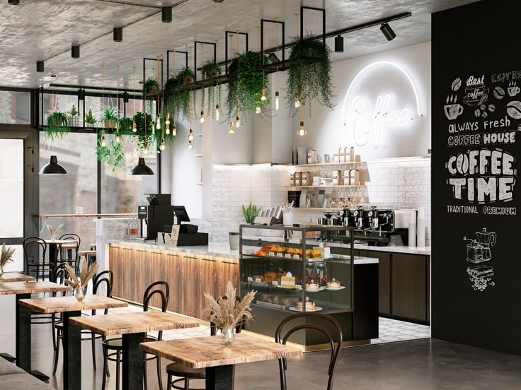

Espresso
Dobbelt shot · dagens bønner

Nørrebro · København
Specialkaffe, kolde drinks og levende kunst — samlet under ét tag midt på Nørrebro.
Oplev VÆRKEn café med plads
til mere
Velkommen til VÆRK
VÆRK er mere end en kaffebar. Vi er et kreativt mødested, hvor du kan slå dig ned med en flat white, møde nye mennesker eller finde ro til dit næste projekt. Her skifter udstillingerne, atelieret er åbent, og der er altid plads ved bordet.
Kig forbi på NørrebroMere end en kaffepause
Kom for kaffen. Bliv for
alt det, der sker omkring den.
01 / Smag
Vi samarbejder med små risterier og brygger hver kop med respekt for bønnen — og for din tid.
02 / Skab
Vores åbne atelier giver lokale kreative plads til at arbejde, dele idéer og vise processen frem.
03 / Mød
Kom alene eller med venner. Her mødes naboer, studerende og nysgerrige over samme langbord.
Kig indenfor
Fra dagens første bryg
til sidste skål i baren.
Ord fra vores gæster
★★★★★
“Min yndlingsplads til at arbejde et par timer. Kaffen er skøn, og man går altid herfra med lidt ny inspiration.”
★★★★★
“Det føles som at træde ind i et fællesskab. Jeg kom for en kaffe og fandt et helt nyt stamsted.”
★★★★★
“Dejligt uformelt, virkelig god matcha og altid noget spændende på væggene.”
Vi glæder os til at se dig
Nørrebros næste kaffepause venter lige om hjørnet.
Find vej til VÆRK